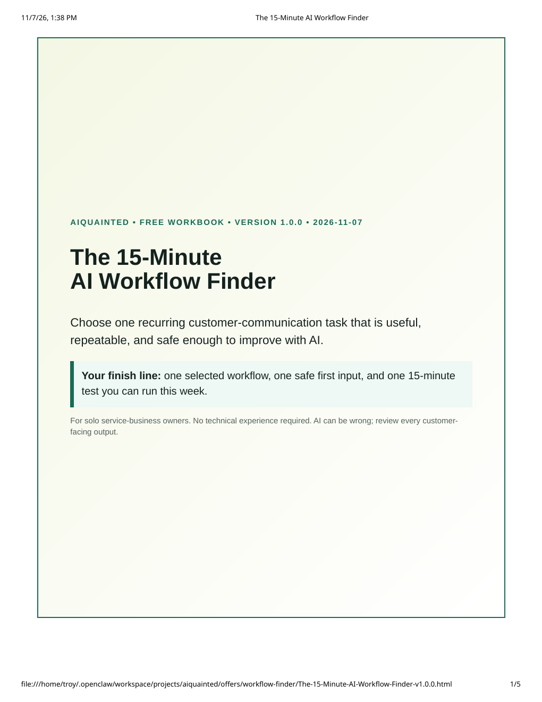
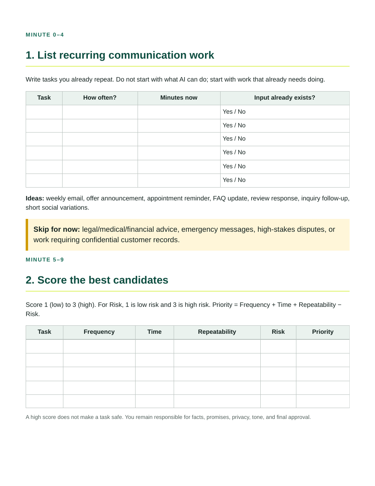
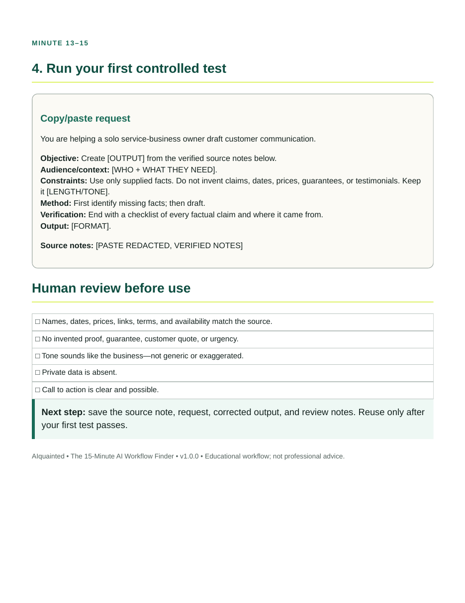
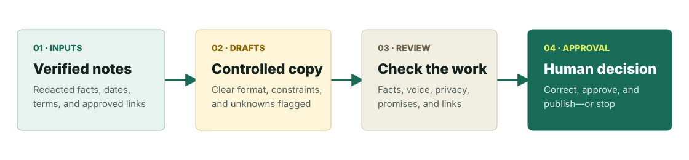
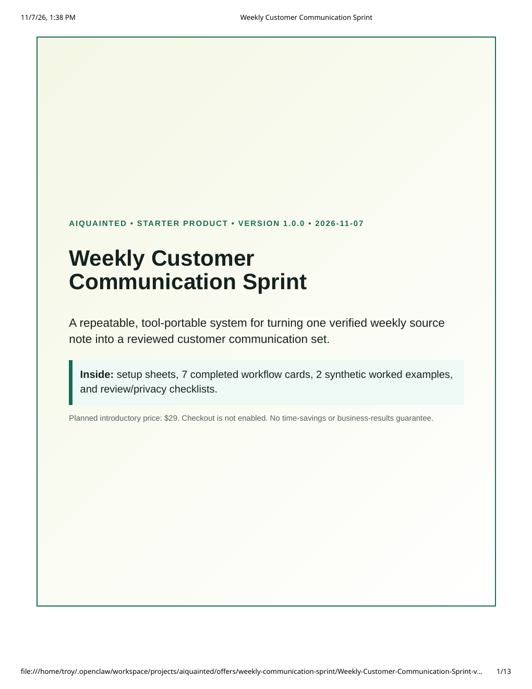
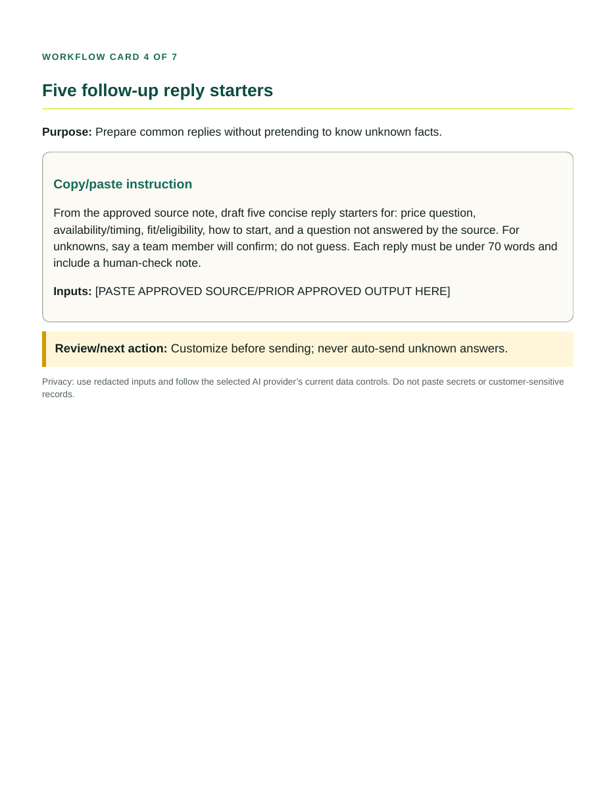

Start with facts
Build from a redacted, verified source note—not a blank prompt.
For solo service-business owners
Turn one verified weekly note into customer-ready drafts—then check the facts, voice, and privacy before anything goes out.
Public prelaunch preview. Lead capture and checkout remain disabled until delivery, legal, support, privacy, and payment integrations are verified.

A controlled starting point
Build from a redacted, verified source note—not a blank prompt.
Check names, dates, prices, links, privacy, and voice before use.
AI drafts. You verify, correct, and approve every customer-facing output.


Available now · free
Choose the first recurring customer-communication task worth improving—without starting with a giant prompt library.
No email required. Exact deliverable: 4-page PDF, version 1.0.0.
How it works
The workflow defines what AI may use, what it must not invent, and where a human must check the work.

Paid starter · planned price $29
Turn one verified weekly source note into a reviewed set of customer-communication drafts using a portable, plain-language workflow.
Planned one-time price: $29. Availability begins only after product rights, customer terms, support, checkout, delivery, and a real test purchase/refund are approved and verified.
Checkout unavailableExact delivered PDF: version 1.0.0. No sending, publishing, AI subscription, personalized service, outcome guarantee, or lifetime-update promise is included.


FAQ
No hype, hidden automation, or outcome promises.
Solo service-business owners who create customer communications at least a few times a month and want a more repeatable AI-assisted process.
The free Finder is a 4-page PDF. The paid Sprint is a versioned PDF containing two setup sheets, 7 workflow cards, 2 synthetic examples, and final review instructions.
No specific brand is required. The copy/paste workflows are designed for major general-purpose chat assistants. You provide your own tool and must check its current data controls.
No. It creates a controlled drafting and review process. A human must verify and approve every customer-facing output.
No. $29 is the planned initial test price. Checkout and lead capture are disabled until legal terms, support, delivery, payment, privacy, and end-to-end testing are complete.
No. AI output varies and can be incorrect. The package includes review steps but does not guarantee time savings, sales, accuracy, or other business outcomes.
Do not paste secrets or customer-sensitive information. Use redacted placeholders and review the chosen provider’s current data settings and policies.